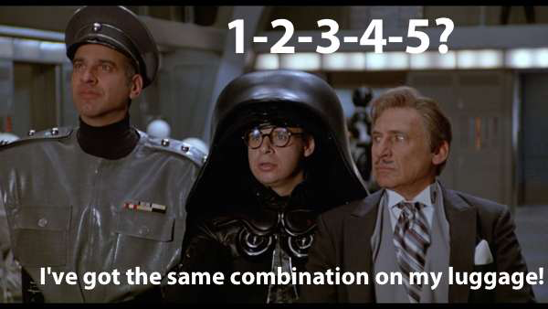
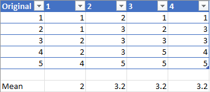

Bootstrap is a statistical resampling technique proposed by Efron Bradely in 1979 (Efron 1979). This is a very brief introduction to bootstrapping. First, this introduction will briefly define what resampling is and the historical context of bootstrapping. Second, to faciliate the promised brevity, further explaination will be rendered via a concrete example and python code. Lastly, a summary and further reader provided so the interested reader may read further.
In statistics, a common definition for resampling is any variety of methods that do one of the following (Resampling 2022):
1. Estimating the percision of stample statistics (mean, median, variance) by using subsets of available data or drawing randomly with replacement from a set of data points
2. Permutation tests: exchanging labels on data points when performing significant tests
3. Validating models by using random subsets
Bootstraping is relevant to 1 and 3.
Historically, bootstrapping is the culmination of earlier work that began in 1946 by Maurice Quenouille and 1958 by John Tukey called Jacknife (Tukey 1958). The colorful name is meant to convey the resampling technique is a rough and ready statistical tool rather than a precise solution to a specific problem. In simple terms, given n sample size, the jacknife estimator is built by aggregating the parameter estimators from each subsample of size (n-1) by omitting one observation.
Boostrapping
Building upon earlier work, Efron proposed a statistical procedure that resamples a single dataset to create many simulated samples. From a single sample, one can calculate a plethora of sample statistics such as mean, median, standard deviation.
Let us expand on the above with an example. Let’s say you wanted to know how many Pokemon you have. How would you find out? Likely, you would just count them all. However, what if you wanted to know the average number of Pokemon that individuals at our company own? Suppose you do not want to interview everyone, but get permission to randomly select 25 individuals. You survey those 25 individuals and this becomes you dataset of 25 points.
Now we are ready to set up bootstrap on the dataset above by constructiong 50 simulated datasets as follows:
* Each simulated dataset is called a bag, we sample with replacement 25 times, from our original data set
* Using replacement means that some data points are counted more than once and some never get picked
* For each simulated dataset or bag, we calculated the average number of Pokemon owned
After we have done the above 50 times, we have 50 averages of the mean number of Pokemon our coworkers own. From this you can calulate a 95% confidence interval that might state something like: It is 95% likely that the mean number of Pokemon owned by individuals at Artisight is between 9 and 15. The above is completely for demonstrative purposes, not based on any actual data or calculations. Please see further reading to see something more concrete.
Resampling involves reusing our dataset many times. Bootstrapping comes from the phrase of doing the impossible by “pulling yourself up by your own bootstraps”. However, research has shown that bootstrap sampling distributions approximate the correct sampling distributions. Remember, the original sample is a proxy to the real population and we then draw random samples from it. The key here is that our original sample must accurately represent the actual population.
Example

For simplicity and brevity purposes, see the basic example below:

The following python code below shows how to create a bag and list what the out of bag observations are:
# scikit-learn bootstrapfrom sklearn.utils import resample# data sampledata = [0.1, 0.2, 0.3, 0.4, 0.5, 0.6]# prepare bootstrap sampleboot = resample(data, replace=True, n_samples=4, random_state=1)print('Bootstrap Sample: %s'% boot)# out of bag observationsoob = [x for x in data if x notin boot]print('OOB Sample: %s'% oob)
Bootstrapping is a powerful and popular resampling method. The following are commonly understood to be the strenghts and drawbacks:
Pro
* Can be used on small datasets
* Handles outliers well
* Does not rely on parametric assumptions
Con
* Can require long amount of computational time
* Can mislead with poor initial dataset
* There will be a margin of error
In statistics, this technique is very useful in providing additional insights on specific estimators such as mean, median, variance, and etc. In data science, it is often used to calculated classification accuracy confidence interval. See further reading below if interested.
Further Reading
The following articles were useful in the development of this brief introduction and recommended for further reading: